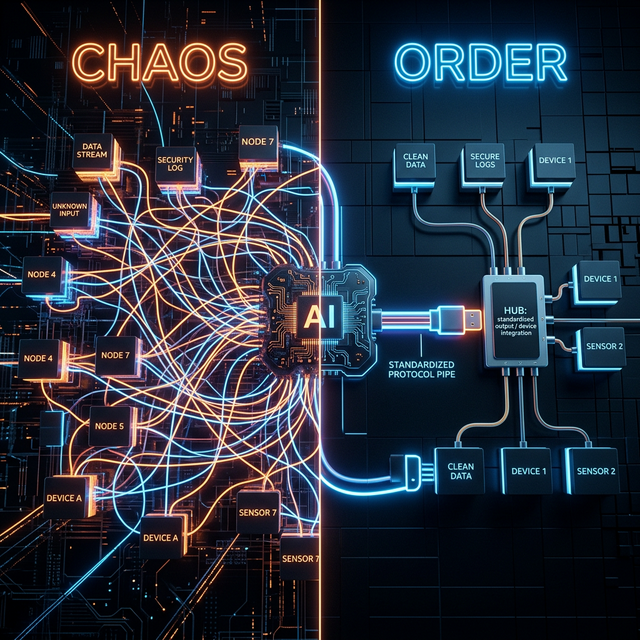

Contents
We see it everywhere: engineers passing raw API keys directly into LLM Orchestrators like Semantic Kernel. It is the AI equivalent of certificate pinning—brittle, un-auditable, and a massive enterprise risk.
Executive Impact Summary
The Agentic Pinning Trap
The Anti-Pattern: A direct, unmediated connection between an AI Orchestrator and backend data stores via static credentials creates a massive zero-trust violation.
In enterprise architecture, we often see how hardcoding trust (like Certificate Pinning) creates brittle systems. You write a script that says, "Trust only this specific ID badge." That works beautifully until the badge rotates, and then your production system crashes.
The exact same convenience trap is happening right now with Agentic AI.
We are seeing enterprise teams build brilliant Multi-Agent workflows. A Coordinator agent passes a task to a Worker agent. The Worker agent uses Semantic Kernel to look up a customer in the CRM or query an SQL database. But here is the fatal flow: They are passing the raw database API keys directly to the agent.
The developer writes a line of code like this:
// DANGER: Passing a raw, static API key directly to the orchestrator
var kernel = Kernel.CreateBuilder()
// ❌ Hardcoding the OpenAI Key
.AddAzureOpenAIChatCompletion(
deploymentName: "gpt-4",
endpoint: "https://my-openai.openai.azure.com/",
apiKey: "STATIC_OPENAI_KEY_12345")
.Build();
// ❌ Hardcoding the Enterprise Database Key into the LLM Plugin
kernel.ImportPluginFromOpenApi(
pluginName: "CustomerDatabase",
apiKey: "STATIC_DB_KEY_999");
// SUCCESS: Using DefaultAzureCredential against the APIM Gateway
var credential = new DefaultAzureCredential(); // Fetches Entra ID Token automatically
var kernel = Kernel.CreateBuilder()
// ✅ Pointing to the APIM Gateway, NOT the raw Azure OpenAI endpoint
.AddAzureOpenAIChatCompletion(
deploymentName: "gpt-4",
endpoint: "https://my-corp-apim.azure-api.net/openai/",
credentials: credential)
.Build();
// ✅ Plugins communicate via Entra ID auth through the Gateway
kernel.ImportPluginFromOpenApi(
pluginName: "CustomerDatabase",
credential: credential);
This is a security disaster.
The Demo Box (The Trap)
You hand the AI the keys to the warehouse. It walks in directly, does whatever it wants, and walks out. There are no cameras, no logs on exactly which agent performed the action, and if the key leaks, the whole warehouse is compromised.
The Fortress (The Fix)
The AI walks up to a secure front desk (APIM). The front desk checks the AI's corporate Managed Identity, logs the request, and fetches the box from the warehouse on the AI's behalf. The AI never sees a real key.
The Building Blocks: SDK vs. Semantic Kernel vs. MCP

The MCP Standard: Replacing chaotic, point-to-point custom plugins with a single, universal integration protocol.
Before we build the fortress, we need to clarify our tools, because developers often blur the lines between execution, orchestration, and standardization.
These tools all help you build software, but they operate at completely different levels of abstraction. Think of building a house:
1. Azure SDK
The standard imperative libraries used to make your code talk directly to Azure services. You write code that says exactly: "Connect to Storage Account X, authenticate with Key Y, and download File Z."
The Analogy: The Hammer and Nails. You (the developer) swing the hammer. It doesn't think; it executes exact commands.
2. Semantic Kernel
Microsoft’s AI Orchestrator framework. Instead of exact commands, you give SK a goal and a box of tools (plugins). It asks the LLM to create a plan, and selects the right tool built using the Azure SDK.
The Analogy: The Construction Foreman. You say, "Build a wall." The Foreman looks at the prompt, decides they need the hammer, and uses the hammer (Azure SDK) to build it.
3. Model Context Protocol (MCP)
A universal standard dictating how AI models connect to enterprise data. Instead of writing custom point-to-point plugins for every AI framework, you build one MCP Server. Any MCP-compatible agent instantly understands how to securely interact with it.
The Analogy: The USB-C Port. Instead of needing a proprietary charger for every different device, everything uses the exact same standard plug to get power and data.
In a modern enterprise Agentic AI architecture, you use all three: Your developer writes an MCP Server to safely access an internal customer database. Under the hood, that MCP Server executes actual database queries using the Azure SDK. Your Semantic Kernel agent then connects to the database via the MCP standard, bypassing the need for proprietary plugins.
Learn from the Experts
To dig deeper into configuring these orchestrators securely, check out these official Microsoft masterclasses:
The Realist Fix: The API Mediation Layer
Target State: Semantic Kernel tool execution routed through the Azure API Management Enterprise Boundary using Managed Identity.
Microsoft Standard reference architecture suitable for CxO/EVP boardroom presentations outlining
exact Zero-Trust boundaries.
Note: This ZIP contains the source .drawio file. Extract it, navigate to draw.io and
select "Open Existing Diagram" to view or edit it.
Reference Architectures
Do not build this from scratch. Leverage Microsoft's official reference architectures:
- Azure/Enterprise-Azure-OpenAI-Hub (Contains full Bicep templates for APIM integration)
- Azure OpenAI Design Patterns
(Contains downloadable official
.vsdxVisio stencils) - Microsoft Docs: Azure API Management as an AI Gateway
- YouTube Masterclass: Using APIM as a GenAI Gateway
The CISO asked, "How do we know the LLM will not hallucinate a DROP TABLE command and execute it?"
The answer is that the LLM should never be authorized to talk to the database in the first place.
To deploy Agentic AI in a Regulated Industry, we must introduce the API Mediation Layer. This means no point-to-point connections between Semantic Kernel and backend systems. Every tool call must be routed through a central gateway (like Azure API Management).
Here is what the API Mediation Layer provides:
Zero-Trust Identity
We use Managed Identity. Semantic Kernel authenticates to APIM using an Entra ID token. APIM uses its own Managed Identity to talk to the database. No static API keys exist anywhere in the code.
Granular RBAC
Even if the LLM hallucinates an unauthorized command, APIM blocks it. We can say, "The 'Reader Agent' is only allowed to HTTP GET, never HTTP POST."
Complete Auditability
Every request the agent makes is logged in Application Insights at the APIM layer, completely separated from the LLM telemetry.
The Extrication Plan
Are you ready to untangle your Agentic AI from static credentials? Here is the sequence:
- Audit the Plugins: Search your Semantic Kernel or LangChain plugins for any instance of `Authorization: Bearer` or `x-api-key` using static secrets.
- Deploy APIM: Stand up Azure API Management (even Developer tier works for POC) in your hub-and-spoke VNET.
- Wrap the Backend: Place your internal APIs (SQL, CRM, ERP) behind APIM. Strip them of raw internet access. Consider wrapping them as standard MCP servers.
- Enforce Managed Identity: Configure your Semantic Kernel container (AKS/ACA) with a System Assigned Managed Identity, and grant that identity `API Management Service Reader Role`.
- Route the Traffic: Point all agent plugins to the APIM gateway endpoints.
If you don't build the tollbooth now, you will be rewriting your entire AI orchestration layer the week before your production audit.
Download the Executive Presentation
Need to present this architecture to your leadership or security teams? Download my complete "Beyond the Prompt: The AI Fortress" slide deck to get buy-in for the API Mediation Layer.
Ready to operationalize your Azure journey?
Agentic AI will radically change your business, but only if the Chief Security Officer allows it into production. Let's build the APIM fortress.